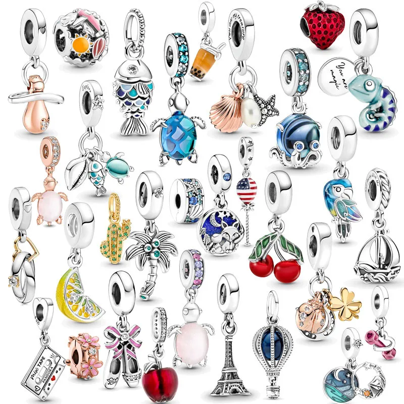
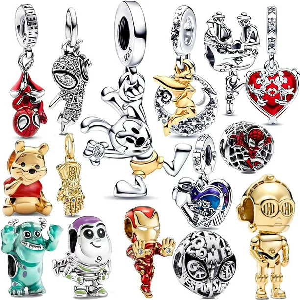
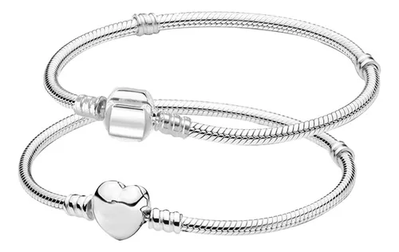
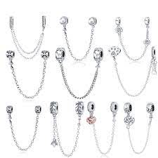

| Inicio | Productos |
|---|---|
|  |  |
|
La historia de Pandora se trata de una compañía con una marca distintiva y productos distintivos que en solo unos años ha hecho un recorrido excepcional de un joyero danés local a una compañía de joyería internacional líder a nivel mundial, con ventas en más de 70 países. 1982-1999: Los primeros años Todo comenzó hace casi 30 años. En 1982, la tienda de un joyero que un día se convertiría en Pandora fue establecida en los modestos alrededores de Copenhague, Dinamarca, por el orfebre Per Enevoldsen y su esposa Winnie. Desde el inicio, viajaban con frecuencia a Tailandia en busca de joyería para importar. Conforme la demanda de sus productos incrementó, su enfoque pasó gradualmente hacia las ventas mayoristas a clientes en Dinamarca. |
|
|  |  |
|
¿Cómo debo limpiar mi Joyería Pandora?
Para limpiar tus joyas, vierte una pequeña cantidad de jabón suave en un poco de agua tibia y utiliza un cepillo de dientes pequeño y suave. Los cepillos de dientes son ideales para la limpieza de joyas con detalles elaborados, que de otro modo pueden ser difíciles de limpiar. Si no se puede quitar la suciedad, remoja la joya en agua limpia. Este método de limpieza particular no se debe utilizar para limpiar la joyería con perlas cultivadas de agua dulce (consultar perlas cultivadas de agua dulce para obtener más detalles). Un paño de pulido de plata es una gran herramienta para que tu joyería de plata esterlina 925 vuelva a brillar si las piezas se llegan a desgastar. Sin embargo, esto no eliminará los rayones. Los paños de pulido de plata pueden comprarse en tiendas Pandora u obtenerse de orfebres. No se recomienda usar un tambor con PANDORA essence collection y Pandora Rose™ En el caso del cuero, simplemente limpia a diario el cuero delicadamente con un paño suave y seco. Las manchas deben eliminarse inmediatamente antes de sumergirlo o secarlo; usa un limpiador profesional suave (sin químicos) o un jabón suave como escamas de jabón o jabón para cuero. Crea espuma en un recipiente y aplícala en un paño libre de pelusa suave, luego limpia el cuero. Después, limpia el cuero con un paño seco y añade acondicionador para cuero para protegerlo a largo plazo. Recuerda alejar el cuero de la luz solar directa. Tu vendedor minorista autorizado de Pandora se complace en ofrecer servicios para la limpieza de la joyería adaptados especialmente para tus productos Pandora. |


|